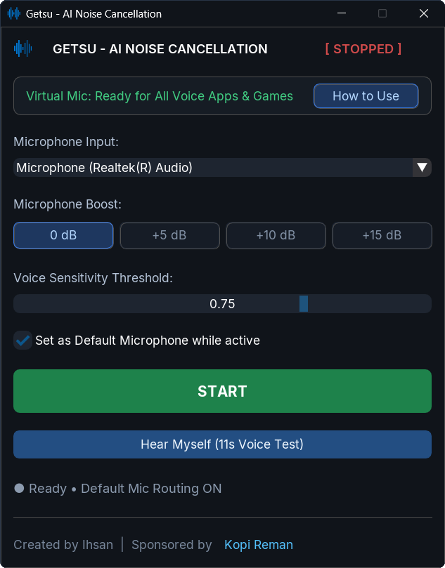

Microphone noise cancellation for Windows.
Blocks desk fans and mechanical keyboard clicks in real-time. Works across Discord, Steam, Zoom, and games. Runs on your CPU, so you don't need an Nvidia RTX graphics card.

Why I built this
"I built Getsu because I play Dota 2 with friends who are too broke for RTX graphics cards, studio mics, or Krisp subscriptions. Our calls were full of fan roar, mechanical keyboard clatter, and the occasional family drama in the background. I wanted a simple tool that runs locally on any normal CPU, costs nothing, has zero tracking, and gets out of the way."
How it works
Getsu listens to your real microphone, cleans it with RNNoise (an open-source neural network from Mozilla), and sends the result to a virtual microphone called CABLE Output.
When you press START, Getsu sets the virtual mic as your Windows default.
If an app (like Steam or in-game voice chat) doesn't pick it up immediately, it's usually because it is hard-locked to your old microphone. Open the app's audio settings, change the Input Device / Microphone to CABLE Output, and you're good to go.
When you press STOP or exit Getsu from the notification tray, your original microphone is restored right away.
Note: The installer bundles the standard VB-Audio Virtual Cable driver. You can untick it during setup if you already have it installed.
Limits (What you should know)
Every tool has trade-offs. Here is what to expect before installing:
- Windows only: Runs on Windows 10 and Windows 11 (64-bit). There is no macOS or Linux build.
- Needs a virtual audio driver: Requires VB-Cable to route audio between apps (the installer handles this automatically).
- Resource usage: Adds roughly ~1.2ms of audio processing buffer and uses about ~1.5% CPU on a standard quad-core laptop. Zero GPU usage.
- Unsigned installer warning: Getsu is an open-source project and isn't digitally signed with an expensive commercial certificate ($300+/year). Windows SmartScreen or your antivirus might show an "Unknown Publisher" warning on first launch. The source code is completely public, and the installer's SHA-256 checksum is published on the release page.
Frequently Asked Questions
How is this different from Discord's Krisp?
Krisp in Discord only cleans your voice inside Discord calls. Getsu cleans the mic for every app that uses it, including Steam voice chat, Zoom, OBS Studio, and in-game voice chat (like Counter-Strike 2 and Valorant) with no time limits.
Do I need an NVIDIA GPU?
No. Getsu runs entirely on the CPU, so it works on AMD, Intel, and budget laptops without a dedicated graphics card.
Will it hurt my FPS in games?
It shouldn't. It uses a small amount of CPU and zero GPU VRAM. On our test machines it uses around 1.5% CPU, but test it on your setup to confirm.
Does it remove mechanical keyboard sounds?
It removes most steady background hum (fans, air conditioning) and a lot of keyboard clicking. Very loud clicks right next to the mic can still leak through. Adjust the Voice Sensitivity slider in the app if it cuts your voice or lets noise in.
Is it private?
Everything runs directly on your computer. Getsu does not record your audio to disk, never makes network connections for voice processing, and does not ask for an account. The full code is on GitHub if you want to inspect it.